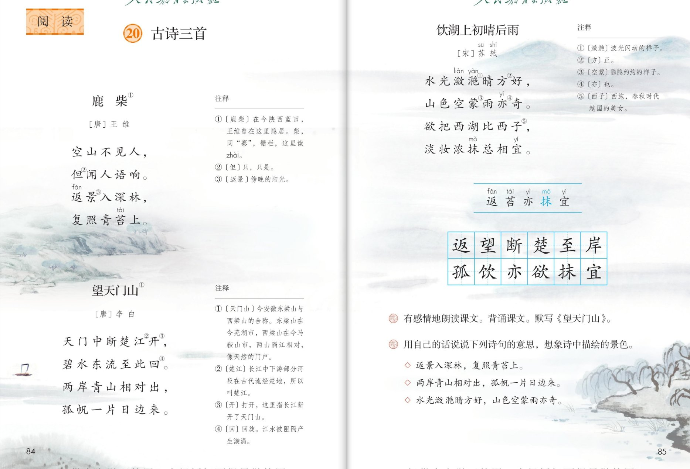

×
🔊 手机听不到声音怎么办？
① 先把手机
媒体音量调大 ，确认没开静音、没连蓝牙耳机；在微信里打开的，点右上角「⋯ → 用浏览器打开」。
② 还是没声音？到应用商店免费下载
Microsoft Edge 浏览器 （它自带朗读发声），用它打开本页面就能出声。
③ 换了 Edge 仍然没声音，说明这部手机的
硬件/系统不支持 网页朗读（多为老旧机型）；近几年买的新手机一般都能正常播放。
→ 打开声音自检
📖 第 20 课《古诗三首》· 有声图文带读
统编版语文 · 第七单元·阅读 · 课本 P84~85 · ［唐］王维 ［唐］李白 ［宋］苏轼 · 素养升级版（对标 2022 课标第二学段）
古诗 3 首
素养目标 4
会认字 5
会写字 12
听写词 12
深入理解 8 题
本课本领 感受生动语言·积累喜欢的语句
🎧 古诗这样学（可随时点任意一句、一个字、一个词单独听）： ① 听读古诗 ——一句一句读，读到哪一句哪一句发光；再试着自己默读 ，结合注释想诗意。② 学字词 ——5 个会认字、12 个会写字，点一个读一个（注意抹是多音字）。③ 词语·听写 ——听写 12 个词（读两遍→你写→报答案→听示范句），再听 4 组近义词辨析。④ 深入理解 ——8 道题（认知 / 理解 / 运用 / 拓展），先想后看。⑤ 背诵与默写 ——三首诗的画面按顺序听，再听三位“诗人”诵诗和小老师的背诵窍门。🌟 课后要求（教材原话）：有感情地朗读课文。背诵课文。默写《望天门山》。
📌 本单元语文要素 ——人文主题：大自然赐给我们许多珍贵的礼物；阅读：感受课文生动的语言，积累喜欢的语句 ；习作：留心生活，把自己的想法记录下来 。
🀄 文化自信
🀄 文化自信
诵读流传千年的三首古诗，感受天门山、西湖、鹿柴的自然之美，热爱中华优秀传统文化。
🗣 语言运用
🗣 语言运用
认识 5 个生字、会写 12 个字；借助注释理解词义，积累喜欢的诗句。
💡 思维能力
💡 思维能力
边读边想象画面，结合注释用自己的话说出诗句描绘的景色。
🎨 审美创造
🎨 审美创造
感受课文生动的语言，积累喜欢的语句，体会诗中的色彩与动静之美。
点诗前的 ①②③ 听整首
🔁 跟读模式：关
👁 隐藏注音（自测用）
字卡上的拼音标的是本课要认的字，读音来自课本生字表
🎤 朗读要求（老师标准） 抹 是多音字；节奏 ，一句诗中间稍稍停一停；想象画面 ：空山深林、天门孤帆、西湖晴雨；断、楚、孤、帆 的写法。
🤫 默读小提示（结合注释默读） 听读 ——点诗句听老师读；第二步 默读 ——不出声、不指读，结合注释想诗意；第三步 朗读背诵 ——读出节奏，背下来。
①
鹿柴 ［唐］王维
空山不见人，
但闻人语响。
返景入深林，
复照青苔上。
📌 这首诗讲：空旷的山林里看不见人影，只偶尔听见有人说话的声音；傍晚的阳光照进幽深的树林，又洒在青苔上。
②
望天门山 ［唐］李白
天门中断楚江开，
碧水东流至此回。
两岸青山相对出，
孤帆一片日边来。
📌 这首诗讲：长江把天门山从中间撞开，碧绿的江水向东流到这里打着回旋；两岸的青山面对面地挺立，一只小船从太阳那边缓缓驶来。
③
饮湖上初晴后雨 ［宋］苏轼
水光潋滟晴方好，
山色空蒙雨亦奇。
欲把西湖比西子，
淡妆浓抹总相宜。
📌 这首诗讲：晴天里西湖水波闪动正好看，雨中山色朦胧缥缈也十分奇妙；真想把西湖比作美人西施，无论淡妆还是浓抹都那么合适。
🤔 想一想（点我可跳过）
点一张图，听读整页

第 84~85 页 · 古诗三首（双页）
📖 人教版《语文》三年级上册 · 课本第 84~85 页 · 图片仅供个人学习，版权归人民教育出版社所有
理解难懂词语的第一帮手
📝 《鹿柴》注释（P84）
📝 《望天门山》注释（P84）
📝 《饮湖上初晴后雨》注释（P85）
🔊 课后题 1
💬 课后题 2
点一个字，听读音、词语和诗句（抹是多音字，注意听）
结构、部首、笔画与书写提示为通用规范，供参考，以教材和老师的指导为准
返fǎn
返景
半包围 · 辶 · 7画
走之底要写得舒展，右边的反字撇捺打开，平捺托住上面。
望wàng
远望
上下 · 王 · 11画
上面是亡和月，下面是王，三横间距均匀，竖提稳住重心。
断duàn
中断
左右 · 斤 · 11画
左边是米加竖折，右边是斤，左右穿插，斤的竖撇要挺。
楚chǔ
清楚
上下 · 木 · 13画
上面两个木，下面一个疋，各部分收紧，捺画舒展。
至zhì
至于
独体 · 土 · 6画
上面一撇一横，中间是土，竖写得直，末笔横托住。
岸àn
岸边
上下 · 山 · 8画
山字头写得扁，下面的干字竖挺，托住山头。
孤gū
孤帆
左右 · 子 · 8画
子字旁收紧，右边的瓜字竖提和点要稳，左右平衡。
饮yǐn
饮水
左右 · 饣 · 7画
食字旁写窄，右边的欠字捺舒展，像一个人张口喝。
亦yì
亦奇
独体 · 亠 · 6画
点横开头，下面左右两点对称，竖钩稳住。
欲yù
欲望
左右 · 谷 · 11画
左边是谷，右边是欠，谷的撇捺舒展，欠的捺呼应。
抹mǒ
涂抹
左右 · 扌 · 8画
提手旁写窄，右边的末字横长，竖钩稳住，注意是多音字。
宜yí
相宜
上下 · 宀 · 8画
宝盖头盖住下面，里面是且，横画间距均匀。
点一行，听读这一组词语
返 返景 返回 往返
望 远望 希望 张望
断 中断 断开 折断
楚 清楚 楚国 楚江
读两遍 → 你在纸上写 → 报答案 → 听示范句
准备听写 · 共 12 个词
○ ○ ○
点下面的「开始听写」，听到一个词就写一个词。
▶ 开始听写
🔁 再读一遍
👁 看答案
点词听读，点句子听示范句，再自己说一句
1 返景 课文词
示范句：返景入深林，写的是傍晚的阳光。
✏️ 我也能说：返景照在青苔上。
2 远望 课文词
示范句：我远望天门山。
✏️ 我也能说：我向远处望什么。
3 中断 课文词
示范句：天门中断楚江开。
✏️ 我也能说：什么被中断。
4 清楚 课文词
示范句：看得清清楚楚。
✏️ 我也能说：谁看得清楚。
5 至于 课文词
示范句：至于岸边，我停下脚步。
✏️ 我也能说：至于哪里怎么样。
6 岸边 课文词
示范句：小船靠在岸边。
✏️ 我也能说：小船停在岸边。
7 孤帆 课文词
示范句：孤帆一片日边来。
✏️ 我也能说：一片孤帆从哪里来。
8 饮水 课文词
示范句：饮湖上，诗人饮水赏景。
✏️ 我也能说：谁饮水。
9 亦奇 课文词
示范句：雨亦奇，雨中的山色也奇妙。
✏️ 我也能说：什么亦奇。
10 欲望 课文词
示范句：欲把西湖比西子。
✏️ 我也能说：谁欲望什么。
11 涂抹 课文词
示范句：淡妆浓抹总相宜。
✏️ 我也能说：怎么涂抹合适。
12 相宜 课文词
示范句：淡妆浓抹总相宜。
✏️ 我也能说：什么相宜。
相同点 / 不一样在哪 / 各造一句
亦 — 也
相同：都表示同样、也是。
不一样：亦 是书面语，常出现在古诗里；也 更口语。
亦：雨亦奇，雨中的山色也奇妙。
至 — 到
相同：都表示到达某个地方或程度。
不一样：至 常组词：至于、至今；到 更口语、用法更广。
至：至于岸边。
孤 — 单
相同：都表示单独、一个。
不一样：孤 常带感情色彩，如孤帆、孤独；单 更普通，如单个、单独。
孤：孤帆一片日边来。
欲 — 想
相同：都表示心里想要、打算。
不一样：欲 是书面语，常组词：欲望、欲把；想 更口语。
欲：欲把西湖比西子。
写祖国风光的诗 《望天门山》写长江天门山，《饮湖上初晴后雨》写西湖，《鹿柴》写幽静山林
比喻句 欲把西湖比西子——把西湖比作美女西施
生动动词 中断、开、回、相对出——让山水像活了一样动起来
写景词语 空山 返景 碧水 孤帆 潋滟 空蒙 青苔
点一张卡，听一听
第七单元我们要感受课文生动的语言，积累喜欢的语句 。三首古诗里藏着好多生动的词句——借助注释读懂它，想象画面感受它，再把喜欢的记下来。
📖 方法一·借助注释
“返景”是傍晚的阳光，“楚江”是长江，“西子”是西施——注释是理解古诗的第一帮手。
💚 方法二·感受生动语言
“中断、开、回、相对出”这些动词，让山水像活了一样动起来，读的时候要有气势。
🎨 方法三·想象画面
读“两岸青山相对出，孤帆一片日边来”，眼前要出现青山挺立、小船驶来的画面。
🌈 方法四·积累喜欢的语句
把诗中你最喜欢的句子画下来，多读几遍，记在心里——这是本单元最重要的本领。
💎 新鲜句式·比喻
欲把西湖比西子——把西湖比作美人西施，淡妆浓抹都合适，多妙呀。
🔥 圈画交流
把你觉得写得生动、喜欢的诗句圈画下来，和同学说说：它写了什么景、好在哪里。🌈 答案不唯一。
标「答案不唯一」的题，说得有道理都对
认知 这三首诗分别是谁写的？他生活在哪个朝代？看解析
🤔 想一想
解析：
《鹿柴》是唐代王维写的，《望天门山》是唐代李白写的，《饮湖上初晴后雨》是宋代苏轼写的。
🌈 答案不唯一，说得有道理都对
认知 《鹿柴》里的“柴”为什么读 zhài（寨）？看解析
🤔 想一想
解析：
柴，同“寨”，栅栏的意思；鹿柴是养鹿的栅栏，这里读 zhài（寨），是地名。
🌈 答案不唯一，说得有道理都对
理解 三首诗分别写了什么地方、什么景色？看解析
🤔 想一想
解析：
《鹿柴》写幽静的山林（空山、深林、青苔）；《望天门山》写长江撞开天门山、碧水孤帆；《饮湖上初晴后雨》写西湖晴天和雨天的景色。🌈 说得有道理都对。
🌈 答案不唯一，说得有道理都对
理解 《饮湖上初晴后雨》写了西湖哪两种天气？各是什么样子？看解析
🤔 想一想
解析：
写了晴天和雨天。晴天“水光潋滟”波光闪动；雨天“山色空蒙”朦胧缥缈，两种都奇妙。
🌈 答案不唯一，说得有道理都对
理解 “两岸青山相对出，孤帆一片日边来”让你想到了怎样的画面？看解析
🤔 想一想
解析：
我想到：长江两岸的青山面对面挺立，一只小船从太阳那边缓缓驶来，又远又亮，像画一样。🌈 想象合理即可。
🌈 答案不唯一，说得有道理都对
运用 结合注释，用自己的话说说“返景入深林，复照青苔上”的意思。（课后题2）看解析
🤔 想一想
解析：
傍晚的阳光照进幽深的树林，又洒在青苔上——山林里静静的，只有阳光在移动。
🌈 答案不唯一，说得有道理都对
运用 背诵三首古诗，再默写《望天门山》，注意“断、楚、孤、帆”的写法。（课后题1）看解析
🤔 想一想
解析：
默写口诀：中断的断是米加竖折加斤，楚上面两个木，孤是子加瓜，帆是巾加凡。默完对照课本检查一遍。
🌈 答案不唯一，说得有道理都对
拓展 你还读过哪些写祖国风光或自然景色的古诗？和同学交流。看解析
🤔 想一想
解析：
比如《望庐山瀑布》《绝句》《山行》等。🌈 答案不唯一，说出诗名和你喜欢的句子就很好。
🌈 答案不唯一，说得有道理都对
💬 背诵支架：先 记住每首诗写的景 → 再 一句一句连起来背 → 最后 默写《望天门山》，检查断、楚、孤、帆。
点一位诗人，听他诵诗（朗读稿为诗文原句）
🎭 王维
空山不见人，但闻人语响。返景入深林，复照青苔上。
🎭 李白
天门中断楚江开，碧水东流至此回。两岸青山相对出，孤帆一片日边来。
🎭 苏轼
水光潋滟晴方好，山色空蒙雨亦奇。欲把西湖比西子，淡妆浓抹总相宜。
🎭 小老师
背诵小窍门：先记住每首诗写了什么景——鹿柴写幽静山林，望天门山写长江孤帆，饮湖写西湖晴雨；再一句一句连起来背。默写《望天门山》时注意断、楚、孤、帆。
🎭 旁白
三首诗都写了自然之美：一个在幽静的山林听人语、看返景，一个在长江上看青山孤帆，一个在西湖边看晴雨变幻。古诗要读出节奏和画面。
每题给自己打 1~3 颗星
1. 我能正确认读本课 5 个会认字（分清抹的读音）。 ☆ ☆ ☆
2. 我能背诵三首古诗，并默写《望天门山》。 ☆ ☆ ☆
3. 我能借助注释，理解难懂的词语（返景、楚江、西子等）。 ☆ ☆ ☆
4. 我能边读边想象画面，说出诗句描绘的景色。 ☆ ☆ ☆
5. 我能感受生动的语言，积累喜欢的诗句。 ☆ ☆ ☆
✍️ 小练笔 ：发现 记录下来——选一处自然景色，写一两句话，说说它是什么样子的，把古诗里学到的词用上。例 ：今天放学路上，小河边的柳树发芽了，枝条软软的，像在跟我打招呼。时间、地点、看到的景色 ，两三句话就行。